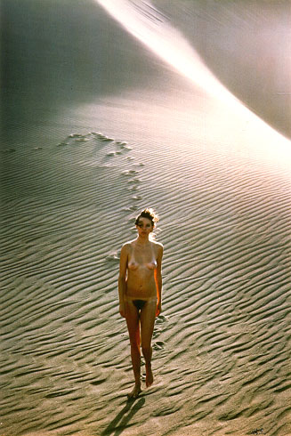

義助慰安婦 —— 李敖百件珍藏義賣藝術品（第53件） 品 名： E3. 柯錫杰〈沙漠裸女系列之一〉 預估價： 15 萬 成交價： （保留） 說 明： 這是柯錫杰先生 1977 年在美國科羅拉多州拍攝的另一張作品，距離現在正好二十年。李敖點名要他為李敖沖洗，他很高興，所以就沖洗出來。 
這是柯錫杰先生 1977 年在美國科羅拉多州拍攝的另一張作品，距離現在正好二十年。李敖點名要他為李敖沖洗，他很高興，所以就沖洗出來。